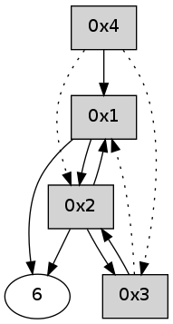

>> << IDX [start] -100 -25 -5 +0 +5 +25 +100 [335.275305033]
 Previous packets
----------------------------------------------------------------------
330.354225 beacon01(adaf) #0 coord=01,02,05,03,04,06 cycle=432.0ms assoc
-- color-indic=0 64 47 b2
330.364185 beacon02(adaf) #0 coord=01,02,05,03,04,06 cycle=432.0ms assoc 64 16 4d
330.374186 beacon05(adaf) #0 coord=01,02,05,03,04,06 cycle=432.0ms assoc 64 b0 67
330.384187 beacon03(adaf) #0 coord=01,02,05,03,04,06 cycle=432.0ms assoc 64 2c 43
330.394186 beacon04(adaf) #0 coord=01,02,05,03,04,06 cycle=432.0ms assoc 64 8a 69
330.404187 beacon06(adaf) #0 coord=01,02,05,03,04,06 cycle=432.0ms assoc 64 fe 75
330.415861 [Hello(2): seq=625 sym=3,6,1 sysInfo= stat=3:4,0,0,0/6:2,0,0,0/1:6,0,0,0]
----------------------------------------------------------------------
330.846334 beacon01(adaf) #0 coord=01,02,05,03,04,06 cycle=432.0ms assoc
-- color-indic=0 64 0a b5
330.856295 beacon02(adaf) #0 coord=01,02,05,03,04,06 cycle=432.0ms assoc 64 5b 4a
330.866295 beacon05(adaf) #0 coord=01,02,05,03,04,06 cycle=432.0ms assoc 64 fd 60
330.876296 beacon03(adaf) #0 coord=01,02,05,03,04,06 cycle=432.0ms assoc 64 61 44
330.886298 beacon04(adaf) #0 coord=01,02,05,03,04,06 cycle=432.0ms assoc 64 c7 6e
330.896297 beacon06(adaf) #0 coord=01,02,05,03,04,06 cycle=432.0ms assoc 64 b3 72
330.908001 [Hello(4): seq=127 sym=1 asym=3,2 sysInfo= stat=1:1,0,0,0/3:0,0,0,0/2:15,0,0,0]
330.910408 [Hello(1): seq=26 sym=2,6 sysInfo= stat=2:9,0,0,0/6:0,0,0,0]
----------------------------------------------------------------------
331.338441 beacon01(adaf) #0 coord=01,02,05,03,04,06 cycle=432.0ms assoc
-- color-indic=0 64 ce da
331.348403 beacon02(adaf) #0 coord=01,02,05,03,04,06 cycle=432.0ms assoc 64 9f 25
331.358402 beacon05(adaf) #0 coord=01,02,05,03,04,06 cycle=432.0ms assoc 64 39 0f
331.368405 beacon03(adaf) #0 coord=01,02,05,03,04,06 cycle=432.0ms assoc 64 a5 2b
331.378404 beacon04(adaf) #0 coord=01,02,05,03,04,06 cycle=432.0ms assoc 64 03 01
331.388404 beacon06(adaf) #0 coord=01,02,05,03,04,06 cycle=432.0ms assoc 64 77 1d
331.400067 [Hello(2): seq=626 sym=3,6,1 sysInfo= stat=3:4,0,0,0/6:2,0,0,0/1:7,0,0,0]
----------------------------------------------------------------------
331.830550 beacon01(adaf) #0 coord=01,02,05,03,04,06 cycle=432.0ms assoc
-- color-indic=0 64 82 6a
331.840510 beacon02(adaf) #0 coord=01,02,05,03,04,06 cycle=432.0ms assoc 64 d3 95
331.850513 beacon05(adaf) #0 coord=01,02,05,03,04,06 cycle=432.0ms assoc 64 75 bf
331.860511 beacon03(adaf) #0 coord=01,02,05,03,04,06 cycle=432.0ms assoc 64 e9 9b
331.870511 beacon04(adaf) #0 coord=01,02,05,03,04,06 cycle=432.0ms assoc 64 4f b1
331.880512 beacon06(adaf) #0 coord=01,02,05,03,04,06 cycle=432.0ms assoc 64 3b ad
331.891599 [Hello(1): seq=27 sym=2,6 sysInfo= stat=2:10,0,0,0/6:0,0,0,0]
331.895875 [Hello(4): seq=128 sym=1 asym=3,2 sysInfo= stat=1:2,0,0,0/3:0,0,0,0/2:0,0,0,0]
----------------------------------------------------------------------
332.322657 beacon01(adaf) #0 coord=01,02,05,03,04,06 cycle=432.0ms assoc
-- color-indic=0 64 46 05
332.332621 beacon02(adaf) #0 coord=01,02,05,03,04,06 cycle=432.0ms assoc 64 17 fa
332.342619 beacon05(adaf) #0 coord=01,02,05,03,04,06 cycle=432.0ms assoc 64 b1 d0
332.352620 beacon03(adaf) #0 coord=01,02,05,03,04,06 cycle=432.0ms assoc 64 2d f4
332.362619 beacon04(adaf) #0 coord=01,02,05,03,04,06 cycle=432.0ms assoc 64 8b de
332.372620 beacon06(adaf) #0 coord=01,02,05,03,04,06 cycle=432.0ms assoc 64 ff c2
332.384289 [Hello(2): seq=627 sym=3,6,1 sysInfo= stat=3:4,0,0,0/6:2,0,0,0/1:8,0,0,0]
----------------------------------------------------------------------
332.814767 beacon01(adaf) #0 coord=01,02,05,03,04,06 cycle=432.0ms assoc
-- color-indic=0 64 9e 41
332.824727 beacon02(adaf) #0 coord=01,02,05,03,04,06 cycle=432.0ms assoc 64 cf be
332.834728 beacon05(adaf) #0 coord=01,02,05,03,04,06 cycle=432.0ms assoc 64 69 94
332.844728 beacon03(adaf) #0 coord=01,02,05,03,04,06 cycle=432.0ms assoc 64 f5 b0
332.854729 beacon04(adaf) #0 coord=01,02,05,03,04,06 cycle=432.0ms assoc 64 53 9a
332.864729 beacon06(adaf) #0 coord=01,02,05,03,04,06 cycle=432.0ms assoc 64 27 86
332.876139 [Hello(1): seq=28 sym=2,6 sysInfo= stat=2:11,0,0,0/6:1,0,0,0]
332.880071 [Hello(4): seq=129 sym=1 asym=3,2 sysInfo= stat=1:2,0,0,0/3:0,0,0,0/2:1,0,0,0]
----------------------------------------------------------------------
333.306874 beacon01(adaf) #0 coord=01,02,05,03,04,06 cycle=432.0ms assoc
-- color-indic=0 64 5a 2e
333.316834 beacon02(adaf) #0 coord=01,02,05,03,04,06 cycle=432.0ms assoc 64 0b d1
333.326835 beacon05(adaf) #0 coord=01,02,05,03,04,06 cycle=432.0ms assoc 64 ad fb
333.336836 beacon03(adaf) #0 coord=01,02,05,03,04,06 cycle=432.0ms assoc 64 31 df
333.346838 beacon04(adaf) #0 coord=01,02,05,03,04,06 cycle=432.0ms assoc 64 97 f5
333.356836 beacon06(adaf) #0 coord=01,02,05,03,04,06 cycle=432.0ms assoc 64 e3 e9
333.368481 [Hello(2): seq=628 sym=3,6,1 sysInfo= stat=3:4,0,0,0/6:2,0,0,0/1:9,0,0,0]
----------------------------------------------------------------------
333.798982 beacon01(adaf) #0 coord=01,02,05,03,04,06 cycle=432.0ms assoc
-- color-indic=0 64 16 9e
333.808942 beacon02(adaf) #0 coord=01,02,05,03,04,06 cycle=432.0ms assoc 64 47 61
333.818943 beacon05(adaf) #0 coord=01,02,05,03,04,06 cycle=432.0ms assoc 64 e1 4b
333.828943 beacon03(adaf) #0 coord=01,02,05,03,04,06 cycle=432.0ms assoc 64 7d 6f
333.838945 beacon04(adaf) #0 coord=01,02,05,03,04,06 cycle=432.0ms assoc 64 db 45
333.848945 beacon06(adaf) #0 coord=01,02,05,03,04,06 cycle=432.0ms assoc 64 af 59
333.860642 [Hello(4): seq=130 sym=1 asym=3,2 sysInfo= stat=1:2,0,0,0/3:0,0,0,0/2:2,0,0,0]
333.865609 [Hello(1): seq=29 sym=2,6 sysInfo= stat=2:12,0,0,0/6:2,0,0,0]
----------------------------------------------------------------------
334.291090 beacon01(adaf) #0 coord=01,02,05,03,04,06 cycle=432.0ms assoc
-- color-indic=0 64 d2 f1
334.301051 beacon02(adaf) #0 coord=01,02,05,03,04,06 cycle=432.0ms assoc 64 83 0e
334.311051 beacon05(adaf) #0 coord=01,02,05,03,04,06 cycle=432.0ms assoc 64 25 24
334.321053 beacon03(adaf) #0 coord=01,02,05,03,04,06 cycle=432.0ms assoc 64 b9 00
334.331051 beacon04(adaf) #0 coord=01,02,05,03,04,06 cycle=432.0ms assoc 64 1f 2a
334.341053 beacon06(adaf) #0 coord=01,02,05,03,04,06 cycle=432.0ms assoc 64 6b 36
334.352727 [Hello(2): seq=629 sym=3,6,1 sysInfo= stat=3:4,0,0,0/6:2,0,0,0/1:10,0,0,0]
----------------------------------------------------------------------
334.783198 beacon01(adaf) #0 coord=01,02,05,03,04,06 cycle=432.0ms assoc
-- color-indic=0 64 9f f6
334.793158 beacon02(adaf) #0 coord=01,02,05,03,04,06 cycle=432.0ms assoc 64 ce 09
334.803159 beacon05(adaf) #0 coord=01,02,05,03,04,06 cycle=432.0ms assoc 64 68 23
334.813160 beacon03(adaf) #0 coord=01,02,05,03,04,06 cycle=432.0ms assoc 64 f4 07
334.823159 beacon04(adaf) #0 coord=01,02,05,03,04,06 cycle=432.0ms assoc 64 52 2d
334.833160 beacon06(adaf) #0 coord=01,02,05,03,04,06 cycle=432.0ms assoc 64 26 31
334.844861 [Hello(4): seq=131 sym=1 asym=3,2 sysInfo= stat=1:3,0,0,0/3:0,0,0,0/2:3,0,0,0]
334.849185 [Hello(1): seq=30 sym=2,6 sysInfo= stat=2:13,0,0,0/6:2,0,0,0]